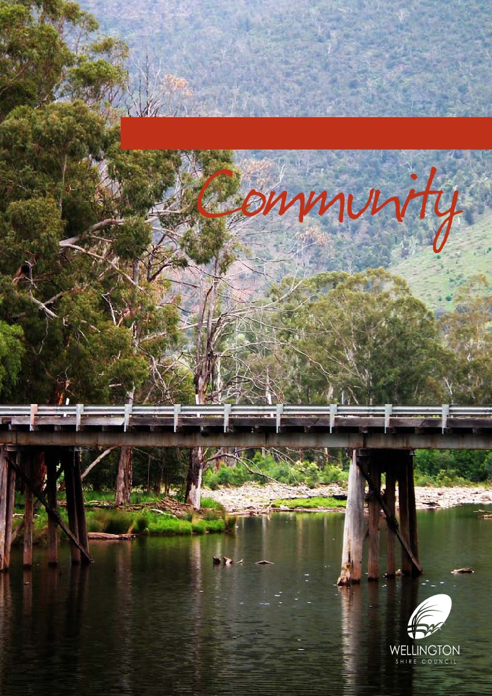
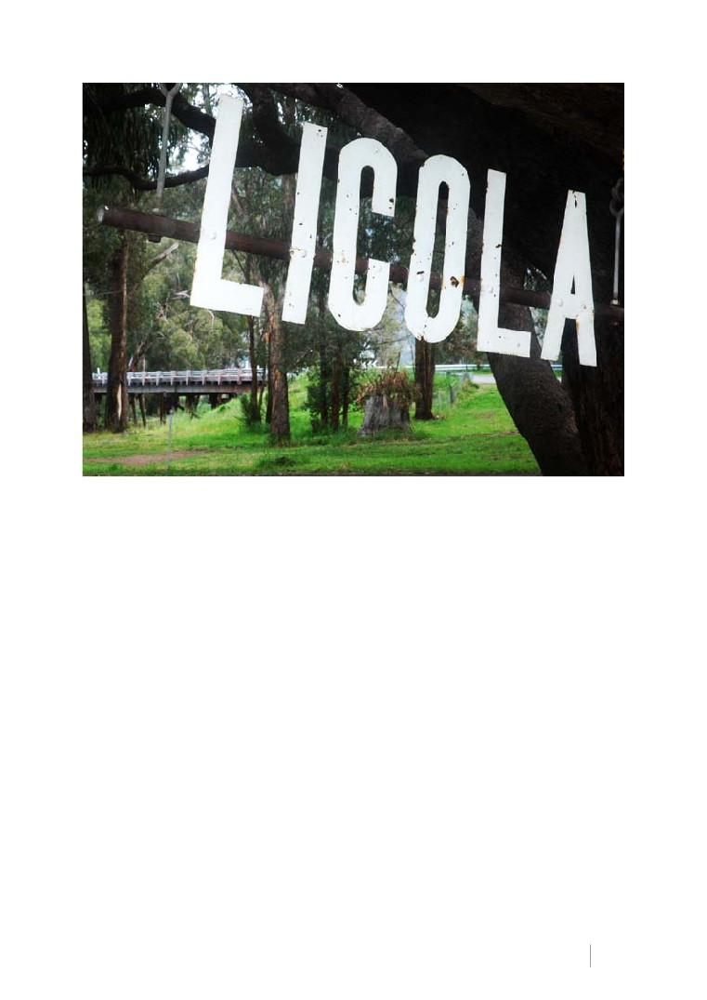
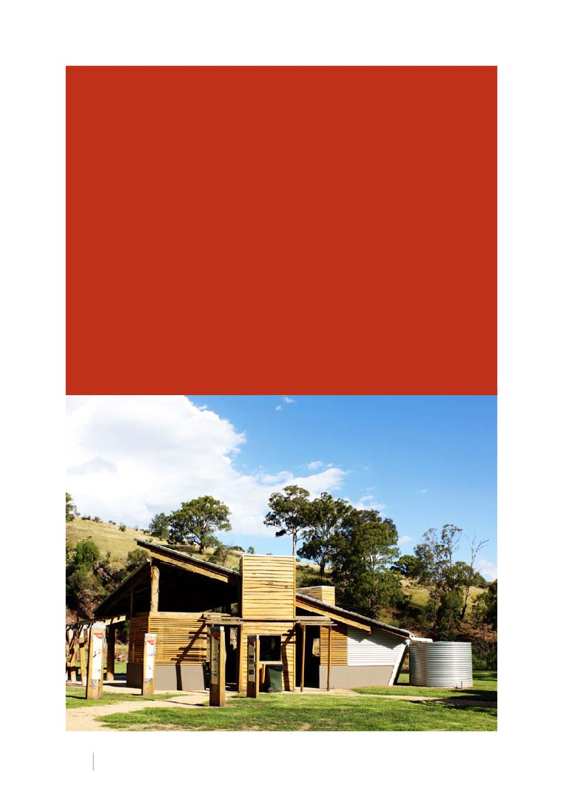
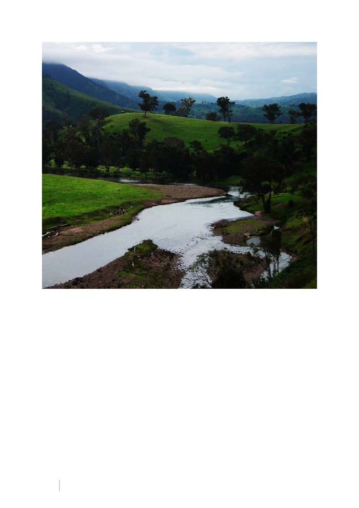
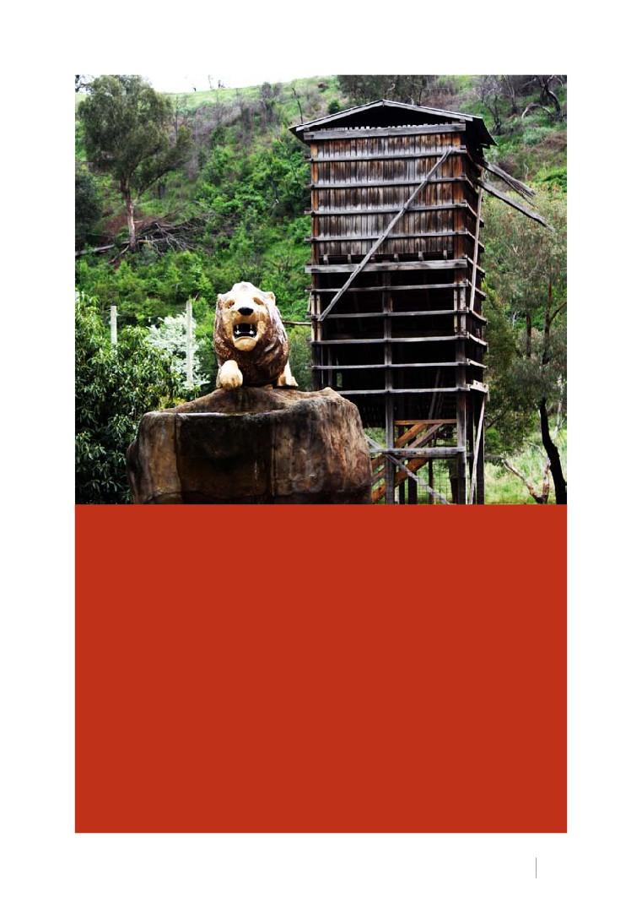
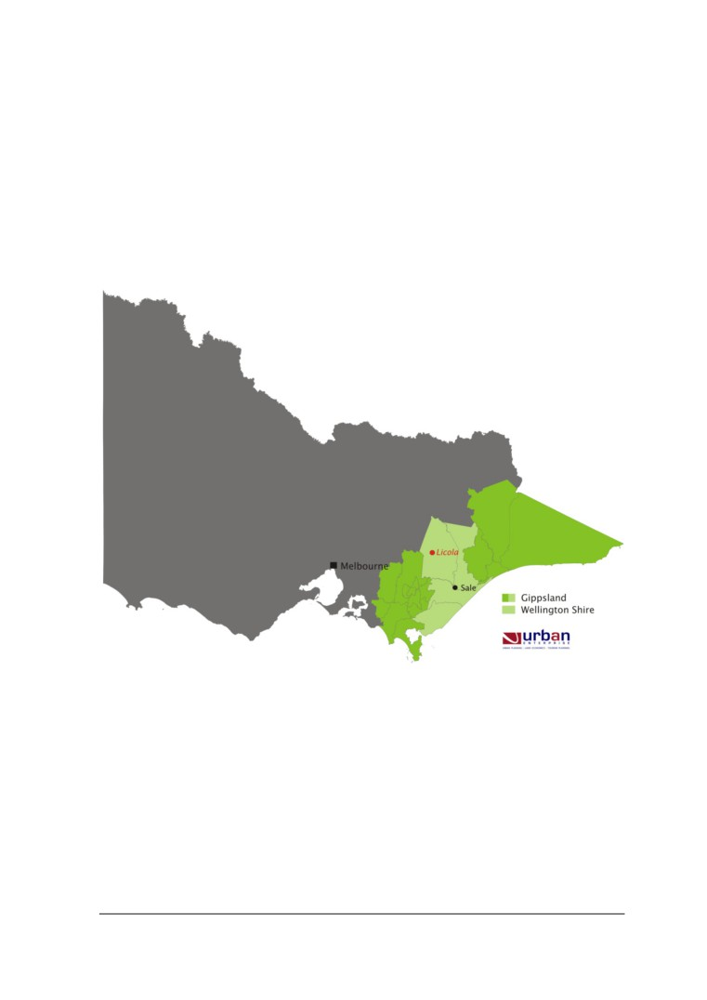
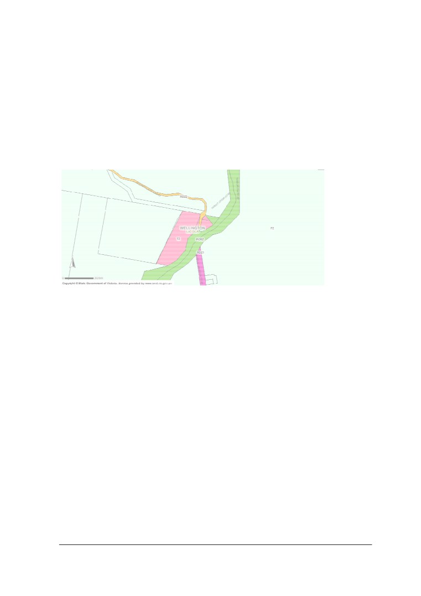
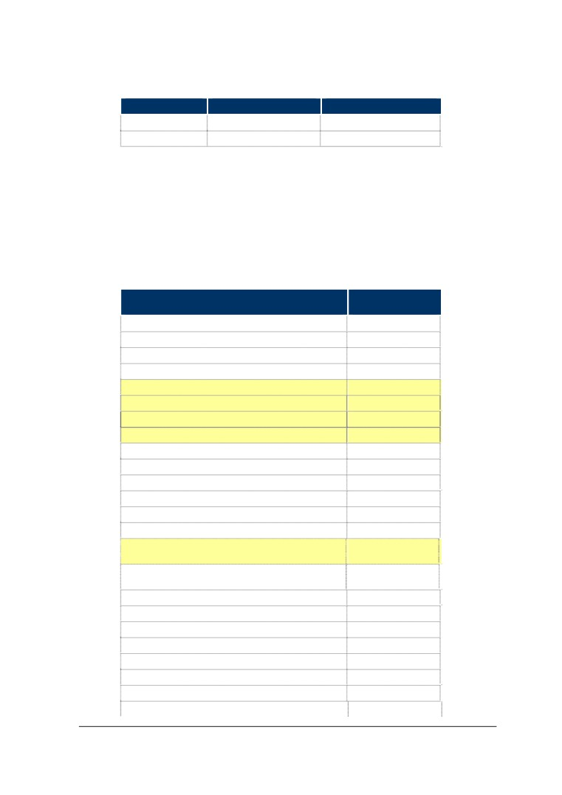
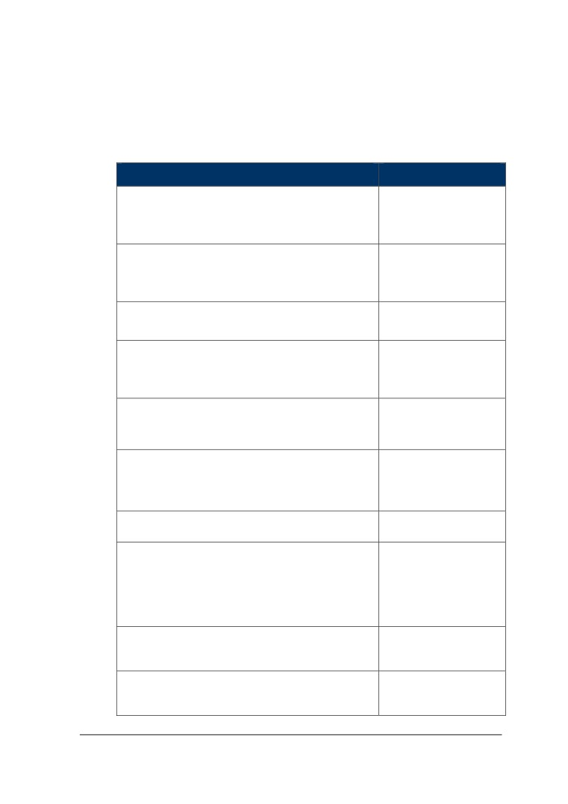
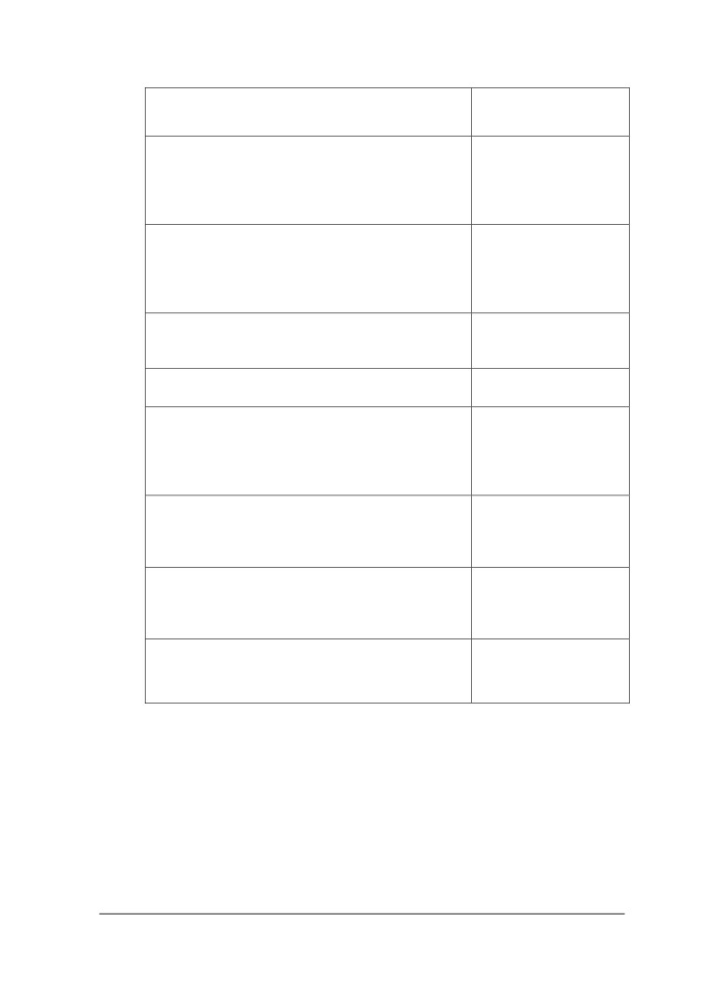

Licola
Plan
2012 - 2015
3
1.0 The Introduction
4
2.0 The Community Representative Group
5
3.0 Achievements to Date
6 - 8
4.0 Short to Medium Term Targets
9
5.0 The Conclusion
2
Licola Community Plan

1.0
The Introduction
A Licola Development Plan was
as outlined below, are now more
commissioned by Wellington Shire
consistent with “Local People, Local
Council in 2008 and prepared by
Ideas, Local Focus”.
Urban Enterprise. This document
was largely Council focussed and
Obviously the historical information
given it has been four years since
in the 2008 document has not
it was prepared, requires updating
changed and much of the town’s
to ensure real local needs and
description and statistics are still
objectives are addressed.
very applicable; therefore, a lengthy
introduction to the 2012 updates
The 2008 Plan is included as
was deemed unnecessary. To
an appendix to this report and
peruse a more detailed introduction
includes a number of footnotes
to Licola, please refer to the
which represent changes, notes
appendix.
and updates from the Licola CRG.
The 2012 community priorities,
Licola Community Plan
3

2.0
The Community
Representative Group
A significant amount of work has been applied by the CRG and broader
Licola community in recent years - resulting in numerous achievements. The
Sections below aim to identify some of those achievements and redirect
community priorities in the short, medium and long term.
A number of areas highlighted in the original ‘Township Development Plan’,
together with other community projects, have been achieved and these are
detailed over the page (page 5).
4
Licola Community Plan
3.0
Achievements To Date
When
Achievement
River rehabilitation. The CRG and Lions Village Licola (LVL)
have worked with the WGCMA extensively since the floods of
2007. A massive amount of work has resulted including the
reconstruction and regeneration of the river banks throughout the
town itself and on private property. In a combined effort that saw
2010
WGCMA, community individuals, Landcare, The Freemasons
Society, and Lions members the main bank (levee) running
the length of the SE side of the Lions Village Camp was rebuilt
from rock taken out of the Devil’s Elbow realignment project on
the Licola road and then replanted with 6,500 indigenous plant
species to help bind the rock.
The re-establishment of 200km’s of fenceline after the 2006
2007 - ongoing
bushfires.
2007 - ongoing
The rebuilding of cattle herd numbers since the 2006 bushfires.
New water treatment plant for whole of town water located at the
2009
LVL site. Thanks to Gippsland Water.
Tanks and bore water supply for emergency use, thanks to
2008
Wellington Shire Council.
New tourist rotunda, BBQ area, toilets, community meeting room
2009
and CFA shed. Thanks to CFA Region 10 and Wellington Shire
Council.
Not sure who
was present at
A redefining of Flood Warning Levels for more accurate/ timely
this meeting or
alarms in times of flood. Bureau of Meteorology.
exactly when
The development of a close nit, viable and vibrant working
2007 - ongoing
community that never previously existed.
Township beautification - trees have been planted to screen the
LVL works depot, all town houses decorated (in conjunction with
2008 - 2010
the Fulham Prison ‘Bush Gang’ initiative) and the shop front
worked on.
Licola Community Plan
5

4.0
Short to Medium Term Targets
In 2011 the Community Representative Group (CRG), made up of elected local
residents, identified the need to update the 2008 Development Plan and provide
an indication of progress to date. It was also deemed necessary to update the
Community Priorities as these inevitably change over a four year period. These
priorities are shown over the page (page 7).
The list, whilst not exhaustive, is to form the basis of ongoing efforts from the CRG in
working with the Licola and surrounding communities.
6
Licola Community Plan
priority
comment
(1) Completing the sealing of the road north to Jamieson
remains a priority. Put in toilets and viewing points. This point
identified in previous “Plan”
(2) 2km out of Licola the Tamboritha road is dropping away on a
blind corner. Badly damaged and needs repair work. Difficulty
surrounding this section of road is ownership.
Roads
(3) The completion of Target creek Road
(4) Development of loop road to Briagalong, Dargo
(5) Bell Bird Corner and Cemetery Corner both on the Heyfield
- Licola road are considered dangerous by regular users.
Campaign required to convince VicRoads
Ideas often emerge on this subject that usually amount to little.
Alternative
This point is identified in the previous “Plan”. If this is ever to
Power Source
become a realistic goal the Licola Community will require help to
make it happen. Possibly in the form of a feasibility study.
Various options have been discussed with many companies and
groups in this area from telecommunications options and UHF
repeater technology. Letters of support have been sent to and
received from numerous people and groups with influence.
Communications
The CRG has recently, in 2012, tried out a number of trunking
radios which have had mixed reports of success when
measured against original criteria for communication as
required. The subject of communication is still very much on the
table as a priority.
Following the closure of the Licola tip an arrangement has
been in place for a few years with Wellington Shire Council that
community rubbish is transferred from the township to Heyfield/
Waste
Kilmany at a fee payable by the Council.
Management
LVL are responsible for own rubbish removal and tip fees. This
arrangement has worked well to date although discussion
centring on a transfer station is still moot.
CONT
Licola Community Plan
7
priority
comment
(1) Link in with other townships to create common theme this
formed part of the original “Plan” and is still on the table despite
much work already achieved.
Township
Beautification
(2) Fencing off the water tanks at the CFA shed.
(3) Wash down area in / at the new CFA shed.
Development
Explore possibilities of rezoning and sub-divisions. See original
of Surrounding
“Plan” (Executive Summary and pages 33, 39, 43 and 44).
area
(1) Reopening of the Wonnangatta to Heyfield Stock Route as a
cycling/ horse riding/ walking track.
(2) Put in a massive map in township central area of all walking
and vehicle tracks in area. This map should include details of
track closures, colour coded with degree of difficulty, notes as to
expected time of travel etc.
Tourism
(3) Create more defined walking tracks in the area.
(4) Camp Grounds along the Wellington. These on the whole
are overgrown significantly reducing the capacity of campers
along this defined camping area. An audit of each of these has
been done in 2012 for reference.
In conjunction with CFA create a Township Protection Plan.
Consultation has already begun and we hope to have this
Fire Safety
booklet printed and ready for the 2013 fire season. In addition
work to be done to satisfy requirements of Neighbourhood Safer
Place - Place of Last Resort Assessment.
The Licola CRG will continue to work with the relevant agencies
including Wellington Shire Council, Parks Victoria, DSE, Victoria
Police, SES, WGCMA and VicRoads, to enhance the resilience
of the Licola community before, during and after emergencies.
Over the next five years, relevant projects may include:
Emergency
Management
• The development of an Community Emergency Plan
• The establishment of a Neighbourhood Safer Place
(Place of Last Resort)
• Installation of appropriate signage and mapping
8
Licola Community Plan

5.0
The Conclusion
The above information represents a roadmap for the Licola community to work
towards. This, together with the below publication (complete with footnoted
changes, updates and notes from the CRG), will be used to engender support from
Council, State Government agencies and community members.
This document should be treated as a continuation of the 2008 report. Referring
to the old document provides context and history to the revised priorities and also
allows us to measure success against the goals and objectives already set.
Licola Community Plan
9
Port of Sale Civic Centre
70 Foster Street (PO Box 506), Sale Victoria 3850
Tel 1300 366 244
Fax 03 5142 3499
Yarram Service Centre
156 Grant Street, Yarram Victoria 3971
Tel 03 5182 5100
Email enquiries@wellington.vic.gov.au
Appendix 1
Urban Enterprise
Licola Township
Development Plan
Author
Mike Ruzzene, Urban Enterprise
Reviewed by:
Matt Ainsaar, Urban Enterprise
Bruce Connolly, Nexus Consulting
© Copyright, Urban Enterprise Pty Ltd, October 2012.
This work is copyright. Apart from any use as permitted under Copyright
Act 1963, no part may be reproduced without written permission of Urban
Enterprise Pty Ltd.
Document Information:
Filename:
c:\users\mike ruzzene\documents\mike ruzzene\licola
development plan\report\licola development plan - 30th
april.doc
Last Saved:
11 October 2012 11:40 AM
Last Printed:
11 October 2012 11:42 AM
File Size:
864kb
Disclaimer:
Neither Urban Enterprise Pty. Ltd. nor any member or employee of Urban
Enterprise Pty. Ltd. takes responsibility in any way whatsoever to any person or
organisation (other than that for which this report has been prepared) in respect of
the information set out in this report, including any errors or omissions therein. In
the course of our preparation of this report, projections have been prepared on the
basis of assumptions and methodology which have been described in the report. It
is possible that some of the assumptions underlying the projections may change.
Nevertheless, the professional judgement of the members and employees of Urban
Enterprise Pty. Ltd. have been applied in making these assumptions, such that they
constitute an understandable basis for estimates and projections. Beyond this, to
the extent that the assumptions do not materialise, the estimates and projections of
achievable results may vary.
CONTENTS
Section
Page
Section
Page
6.2
Wellington Shire Planning Department
24
EXECUTIVE SUMMARY
III
6.3
Wellington Shire Tourism
24
2.
INTRODUCTION
7
6.4
Parks Victoria
25
2.1
Background
7
6.5
Catchment Management Authority
25
2.2
The Development Plan
7
6.6
Surrounding Property Owner
25
3.
EXISTING SITUATION
8
6.7
Lions Club
26
3.1
Location
8
7. ISSUES AND
3.2
Township Uses
8
OPPORTUNITIES
27
3.3
Ownership and Tenancies
9
7.1
Issues
27
3.4
Services
9
7.2
Opportunities
29
3.5
Land Use Planning
11
8. RECOMMENDATIONS
31
4.
STRATEGIC POLICY
8.1
Introduction
31
FRAMEWORK
14
8.2
Detailed Recommendations
33
4.1
Introduction
14
8.3
Implementation
43
4.2
Municipal Strategic Statement, 2008
14
4.3
Tourism Development Strategy, 2007
15
TABLES
4.4
Conclusion
16
Table 1 Origin of Overnight Visitors
20
4.5
Implications for Licola
17
Table 2 Activities Undertaken by Visitors to
Wellington Shire
20
5.
ECONOMIC DRIVERS
18
Table 3 Implementation Plan
43
5.1
Introduction
18
5.2
Economic Drivers Overview
18
FIGURES
5.3
Population
18
Figure 1 Location of Licola
8
5.4
Tourism Overview
18
Figure 2 Age Groups of Outdoor Activity Visitors
21
5.5
Tourism Markets
19
Figure 3
Lifecycle Groups - Outdoor Activity
Visitors
22
5.6
Conclusion
23
Figure 4 Household Income - Outdoor Activities
5.7
Implications for Licola
23
Visitors
22
6.
CONSULTATION
24
6.1
Introduction
24
Urban Enterprise and Nexus Consulting
ii
Licola Township Development Plan
11 October 2012
Executive Summary
Strategic Policy Framework
The strategic directions highlight support for further tourism development in Licola
with the following relevant directions:
To encourage the development of tourism around the Shire’s natural
environment, and cultural and heritage assets.
Facilitate high quality tourist use and development which links to the
agricultural economy, natural environment, and heritage of the Shire.
Concentrate urban type tourist and commercial recreation development in
established centres.
Furthermore the Tourism Strategic Plan highlights that there is opportunity to
strengthen and develop tourism building on the natural assets of the high country,
including four wheel and two wheel drive touring.
Economic Drivers and Visitor Markets
The extremely low population base of Licola highlights the importance of visitors
for the township to drive economic activity. Without visitors to Licola, any tourist or
retail business would not be viable.
Outdoor activities are highly popular amongst Victorians.
Targeted marketing to Gippsland Schools and sports groups would be a key
opportunity to further expand the market for the Southern Alps.
There is opportunity to further develop outdoor tourism in the Southern Alpine
area.
Any development of activities in the Alps surrounding Licola would have direct
benefit for the Licola Wilderness Village Camp and township1. There is
opportunity to develop the following activities in conjunction with Parks Victoria:
Designated bushwalking loops with interpretation;
1 CRG update 2012- ‘and General Store & Caravan Park’
Urban Enterprise and Nexus Consulting
iii
Licola Township Development Plan
11 October 2012
High quality camp grounds;
Cross Country Skiing
Four Wheel Drive Touring2
Melbourne is the key overnight visitor market for Wellington Shire. Further
evidence from the Lions Club wilderness camps highlights the importance of the
south eastern suburbs for visitation to Licola and the region.
Recommendations
The following are recommendations for the Licola Development Plan. Further
details on these are provided in Section 7 of this report.
Urban Land
Explore the rezoning of land to the south of the township to Rural Activity
Zone to allow for tourism uses such as accommodation, tavern or four wheel
drive club rooms.
Review the zoning for the PCRZ triangle parcel of land in Licola Township, in
light of it being in private ownership. A review of the property cadastre is also
required in Licola Township, to provide more certainty for land owners in terms
of the property boundaries.
Urban Design
Prepare a Masterplan for Licola Township in conjunction with the Wilderness
Camp.
Develop a designated walking trail along the River’s edge to be utilised by the
Wilderness Village Camp visitors, daytrip visitors to Licola and overnight
visitors staying at the Caravan Park.
Review opportunities for visitor interpretation throughout Licola. Develop an
interpretive trail through the township incorporating the river trail as identified
above.
Township Theme
Create a consistent design theme for Licola which reflects the high country.
This can be applied to a range of aspects within the village to create greater
awareness and defined market positioning.
2 CRG addition 2012 - ‘Two wheel drive touring’ and ‘Off road motorbike touring’
Urban Enterprise and Nexus Consulting
iv
Licola Township Development Plan
11 October 2012
Protection against Natural Disasters
Review the applicability of wildfire overlay and land subject to inundation
overlay for Licola Township.
Update the MSS to highlight the requirement for flood and fire resistant
infrastructure in the Macalister River Valley, as well as highlight the key capital
works projects that are required to support the local community and tourism in
the region, this includes a new bridge into Licola Township. Once adopted,
the strategies in this report should also be included in the MSS.3
Servicing
Explore the opportunities to develop sustainable power generation in Licola
township.
Tourism Product Development
Develop a touring route Masterplan for the Licola-Jamieson Road building on
the natural attractions and heritage of the area.
Build a business case for the sealing of the Licola-Jamieson Road, utilising
the touring route Masterplan as a base.
Promote the opportunity to develop a Tavern with high quality self contained
accommodation on the southern entry point to Licola. This would require the
rezoning of land to Rural Activity Zone to encourage new tourism uses in the
township.
Develop a Four Wheel Drive touring itinerary in conjunction with Mansfield
Shire. This can cater for multi day or single day touring. The touring
experience can link some of the key product in the Alpine region, which
promotes touring from Mansfield Shire through to Wellington Shire
Promote the wilderness ski touring experience in the High Country, north of
Licola.
Promote further hiking experiences in the Wellington High Country.
Marketing and Branding
Develop a new brand identity for Licola as the Gateway to the Southern
Victorian High Country. This brand should be utilised by Council but also the
3 CRG recommendation 2012 - Review and assess the Licola Wilderness Village (Lions Village Licola [LVL])
as a Neighbourhood Safer Place or Place of Last Resort against CFA requirements.
Urban Enterprise and Nexus Consulting
v
Licola Township Development Plan
11 October 2012
Wilderness Village Camp to create one identity and create wider awareness of
the region.
Develop a suite of collateral for outdoor activities in the High Country region to
be promoted further on the Wellington Website and at Visitor Information
Centres in Wellington.
Promote awareness of Licola and the Southern Alps to the key market
segments in Melbourne and Gippsland.
Develop an events calendar which utilises the Lions Club Village Camp4
4 CRG addition 2012- ‘and Caravan Park’
Urban Enterprise and Nexus Consulting
vi
Licola Township Development Plan
11 October 2012
2. Introduction
2.1
Background
Licola Township was formerly a timber town in the Macalister River Valley. Once
the sawmill ceased operating, the Lions Club purchased the township and began
operating a wilderness camp and Caravan Park utilising the existing buildings
within the township.
Recent natural disasters in 2006 and 2007 including fire, flood and landslides had
destroyed a significant amount of infrastructure within the Macalister and
Wellington River Valleys and isolated Licola Township from Gippsland for a period
of time. The result of this has been a significant decline in visitation to the region
and reduction in the number of camps held at the Licola Wilderness Village Camp
in 2006 and 2007.
Repair and replacement of infrastructure is gradually taking place, and the Licola
Wilderness Village has fully reopened for business in 2008.
2.2
The Development Plan
Urban Enterprise in conjunction with Nexus Consulting were appointed by the
Wellington Shire and Lions Club to undertake a development plan for the Lions
Club Licola Wilderness Village Camp and Licola Township.
Two outputs from the project have been developed: a Business Plan for the Lions
Club Camp, and a Development Plan for the Licola Village.
This Development Plan identifies strategies to assist in the development of the
Licola Township, so that it may continue as a gateway to the high country and
base for nature based tourism in Wellington Shire.5
Strategies in this report have been developed from the following research:
Consultation with stakeholders including local community
representatives, Wellington Shire Council and other Government
authorities;
Review of strategic policy relevant to Licola;
Site visit and town walk;
Review of existing conditions, including data analysis.
5 CRG addition 2012 - ‘and continue as a viable and thriving community’
Urban Enterprise and Nexus Consulting
7
Licola Township Development Plan
11 October 2012

3. Existing Situation
3.1
Location
Licola is located in Gippsland, approximately 75 minutes drive, north of Sale.
Licola is situated in the Macalester River valley below the Wellington High
Country. The map below highlights Licola’s location in Gippsland.
Figure 1 Location of Licola
3.2
Township Uses
The following land uses are found within Licola Township:
Lions club camp incorporating:
Self contained units with accommodation for 260 persons;
Staff accommodation;
Gymnasium;
Hall and commercial kitchen;
Urban Enterprise and Nexus Consulting
8
Licola Township Development Plan
11 October 2012
Works depot;
Various outdoor activity facilities;
Caravan Park, including:
General store;
Permanent sites;
Casual sites.6
Staff accommodation;
Council Reserve with toilets and CFA.7
3.3
Ownership and Tenancies
The Lions Club owns all land within the Township, except for a small reserve
owned by the Wellington Shire near the Macalister River. See existing situation
plan on page 9.
Land abutting the Township is owned by one single land owner.
The Lions Club lease the Caravan Park to a private operator.
3.4
Services
Services to the township are all provided on site, they include the following:
Electricity. Two8 diesel generators are sited within the Wilderness
Camp which power the camp, caravan park, staff accommodation,
CFA and public toilets;
Sewer. Septic treatment is provided on site by the Lions Club;
Water. The Lions Club currently pump water from the Macalister
River which supplies the town. A new bore has been installed on
Council land to service the township also9.
6 CRG addition 2012 - There is also an ablution block
7 CRG addition 2012 - There is now also a Community Meeting Room and BBQ rotunda
8 CRG update 2012 - There are now three diesel generators
9 CRG update 2012 - LVL currently pump water from the Macalister River, or bore in emergencies, which
supplies the town.
Urban Enterprise and Nexus Consulting
9
Licola Township Development Plan
11 October 2012
Gas. The Lions Club stores gas for the commercial kitchen and for
heating water. Hot water is piped to the self contained
accommodation and kitchen from a single hot water system.
Urban Enterprise and Nexus Consulting
10
Licola Township Development Plan
11 October 2012

3.5
Land Use Planning
Licola is zoned almost entirely as Township Zone (TZ), except for a small parcel
owned by Council which is zoned Public Conservation and Resource Zone
(PCRZ).
The land abutting the township is zoned Farm Zone, whilst the Macalister River
reserve is also zoned as Public Conservation and Resource Zone (PCRZ).
Licola and Surrounds - Zoning
Township Zone
The Township Zone is provided to allow for residential development and a
range of commercial, industrial and other uses in small towns.
The Township Zone was implemented under the state-wide planning in
1996 for urban land which does not have reticulated sewer.
Public Conservation and Resource Zone
The Public Conservation and Resource Zone protects and conserves the natural
environment and natural processes for their historic, scientific, landscape, habitat
or cultural values.
The aim of the zone is to provide facilities which assist in public education and
interpretation of the natural environment with minimal degradation of the natural
environment or natural processes.
Farming Zone
The purpose of the Farming Zone is to:
Provide for the use of land for agriculture land;
Urban Enterprise and Nexus Consulting
11
Licola Township Development Plan
11 October 2012
Ensure that non-agricultural uses, particularly dwellings, do not
adversely affect the use of land for agriculture;
Encourage use and development of land based on comprehensive
and sustainable land management practices and infrastructure
provision;
Protect and enhance natural resources and the biodiversity of the
area.
Urban Enterprise and Nexus Consulting
12
Licola Township Development Plan
11 October 2012
Insert Existing Conditions Plan
Urban Enterprise and Nexus Consulting
13
Licola Township Development Plan
11 October 2012
4. Strategic Policy Framework
4.1
Introduction
The following is a review of relevant strategic documents for Licola Township.
4.2
Municipal Strategic Statement, 2008
The following are relevant strategic policy objectives drawn from the MSS relating
to economic development:
To expand and diversify the regional economy and increase
employment.
To generate employment within a framework of ecologically
sustainable development.
To promote and develop opportunities for value adding industries,
plantation timber production, eco-tourism and cultural tourism.
To encourage the development of tourism around the Shire’s natural
environment, and cultural and heritage assets.
To protect and reinforce the role of existing commercial centres in a
manner appropriate to their function.
Tourism
Encourage rural based tourist activities that do not adversely impact
upon legitimate agricultural activities.
Facilitate high quality tourist use and development which links to the
agricultural economy, natural environment, and heritage of the Shire.
Focus tourism in areas having favourable natural attributes, access,
and infrastructure.
Ensure connectivity with local pedestrian and cycle paths to
encourage physical activity through low impact and ecologically
sustainable tourism,
Concentrate urban type tourist and commercial recreation
development in established centres.
Urban Enterprise and Nexus Consulting
14
Licola Township Development Plan
11 October 2012
Assess proposed sites for tourist developments along the coastline
and lakes foreshore on the basis of their environmental capability and
suitability.
Special Water Catchment Area
The 2012 Licola CRG has removed the section relating to 'Special Water
Catchment Area' from the original document due to an objection to the proposed
C55 water overlay amendments.
4.3
Tourism Development Strategy, 2007
The Tourism Development Strategy was undertaken by Nexus Consulting in 2007.
The following are recommendations relevant to Licola from this strategy:
Recommendation 4: Create an Investment Climate
A strong, vibrant tourism industry needs private sector
investment in tourism product and infrastructure. Whilst it
is not the responsibility of the Shire to provide investment
funds for the tourism industry, the Shire can provide an
investment climate that assists and supports appropriate
development.
Recommendation 9: Significant Projects
The following projects will add significant value to the
tourism product in Wellington Shire. It is recommended
that a timeline be developed for project commencement
Urban Enterprise and Nexus Consulting
15
Licola Township Development Plan
11 October 2012
and completion across the next five years. It is also
recommended that these projects be pursued with the
relevant partner authorities, stakeholders and local
communities in a collaborative approach. - High Country
Product Development
Relevant actions to Licola identified in the tourism strategy include:
Conduct a feasibility study to determine the viability of sealing, (a) the
Grand Ridge Road10, (b) Dargo High Plains Road11 and (c) Licola -
Jamieson Road12;
Develop a High Country 4x4 touring route in collaboration with Parks
Victoria and Local Governments surrounding the Alpine National Park;
Actively welcome and market to the trail bike, deer hunting and 4x4
visitors to high country areas;
Promote huts of the high country;
Investigate sealing of the Dargo High Plains and Dargo - Licola roads.
4.4
Conclusion
The strategic directions highlight support for further tourism development in Licola
with the following relevant directions:
To encourage the development of tourism around the Shire’s natural
environment, and cultural and heritage assets.
Facilitate high quality tourist use and development which links to the
agricultural economy, natural environment, and heritage of the Shire.
Concentrate urban type tourist and commercial recreation
development in established centres.
Furthermore the Tourism Strategic Plan highlights that there is opportunity to
strengthen and develop tourism building on the natural assets of the high country,
including four wheel and two wheel drive touring.
10 CRG note 2012 - not sure of relevance of this item given its location
11 CRG note 2012 - believe this to be an unlikely target
12 CRG note 2012 - High importance placed on this. See ‘Achievements & Short to Medium Targets’ which
were updated in 2012
Urban Enterprise and Nexus Consulting
16
Licola Township Development Plan
11 October 2012
4.5
Implications for Licola
The sealing of Licola - Jamison Road would create significant economic benefit
for Licola Township in terms of visitors passing through and stopping at the
general store and Caravan Park in Licola. The sealing of the road would increase
both touring and non touring traffic through Licola.
The sealing of the Mansfield-Wangaratta Road is an example the development
opportunities which follow the creation of a new and effective transport route. The
King Valley and Tolmie regions have benefited greatly from the sealing of this
road, with new restaurant and cellar doors opening up in the region as well as
significant increases in property development in the region.
The sealing of the Jamieson - Licola Road if pursued would provide the following
benefits:
Create an effective transport route linking central and East Gippsland
with North East Victoria, which would decrease travel times
significantly;
Create a significant touring product in Gippsland of State significance;
Create significant flow on economic and social flow on benefits for
Licola, Heyfield and the Macalister and Wellington River Valleys.
Urban Enterprise and Nexus Consulting
17
Licola Township Development Plan
11 October 2012
5. Economic Drivers
5.1
Introduction
This section identifies the economic drivers for Licola Township.
5.2
Economic Drivers Overview
Population. The population within Licola and surrounding areas
provides a catchment for services offered within the township.
Licola Wilderness Village Camp. More than three quarters of the
urban land in Licola is used by the Lions Club Camp. The Wilderness
Camp is the main driver for activity within the Licola Township.
Natural Attractions Tourism. Licola receives a significant amount of
drive through traffic which uses the town as a gateway to the High
Country. These include visitors which are going four wheel driving,
touring, camping, bushwalking and hunting.
5.3
Population
The statistical area relevant to Licola is Licola (State Suburb). This includes not
only the Licola Township, but also the surrounding farming area and National
Park. This area is relevant for Licola, as the farming area forms an important
catchment for the township.
Key statistics for the Licola District are:
Only 21 people have been identified as resident to Licola district;
There are 17 private dwellings acknowledged in the Licola district, of
which 14 are occupied.
The extremely low population base of Licola highlights the importance of
visitors for the township to drive economic activity. Without the visitors to
Licola, any tourist or retail business would not be viable.
5.4
Tourism Overview
5.4.1 Licola Region Activities
Licola and the surrounding Alps are home to a range of outdoor activities. These
include:
Urban Enterprise and Nexus Consulting
18
Licola Township Development Plan
11 October 2012
Bushwalking;
Snow shoeing and cross country skiing;
Mountain biking;
Rock climbing;
White water rafting;
Canoeing / kayaking;
Fly fishing;
4Wheel driving;
Camping13
5.4.2 Visitation
Wellington Shire
In 2006 the Wellington Shire attracted 315,000 overnight visitors and a further
565,000 daytrip visitors.
Alpine National Park
In 2001 Alpine National Park received an estimated 300,000 visitors. Many of the
visitors to the Southern Alpine National Park enter via Licola, however it is difficult
to determine the exact number.
5.5
Tourism Markets
5.5.1 Profile of Visitors to Wellington Shire
Origin
The table below highlights that over half of all daytrip visitors to destinations in
Wellington Shire are travelling from within Gippsland.
In contrast almost three quarters of all overnight visitors come from Melbourne.
This highlights the importance of Gippsland as a daytrip visitor market for Licola.
13 CRG addition 2012 - ‘Motorbike touring’, ‘Off road motorbiking’ and ‘Horse riding’
Urban Enterprise and Nexus Consulting
19
Licola Township Development Plan
11 October 2012

Table 1 Origin of Overnight Visitors
Daytrip Visitors
Overnight Visitors
5.5.2 Visitor Activities
A number of activities which can be undertaken around Licola such as general
sightseeing, bushwalking, fishing, visiting national parks and outdoor activities are
already amongst the most popular activities undertaken in Wellington Shire. This
highlights the opportunity for Licola Township to capitalise on this market.
Table 2 Activities Undertaken by Visitors to Wellington Shire
Proportion of
Activity
Visitors
Urban Enterprise and Nexus Consulting
20
Licola Township Development Plan
11 October 2012
Total
100%
5.5.3 Tourism Markets
Profile of Outdoor Activity Visitors
The following graphs have been developed using data from the National Visitor
Survey, Tourism Research Australia, 2006 to identify the demographic
characteristics of visitors who undertake outdoor activities in Victoria.
Age
The predominant age groups for visitors who undertake outdoor activities are
those in the 30 - 49 year age groups.
Figure 2 Age Groups of Outdoor Activity Visitors
70 years or over
4%
65 - 69 years
5%
60 - 64 years
5%
55 - 59 years
7%
50 - 54 years
9%
45 - 49 years
11%
40 - 44 years
12%
35 - 39 years
11%
30 - 34 years
10%
25 - 29 years
9%
20 - 24 years
9%
15 - 19 years
8%
Source: National Visitor Year
Lifecycle Group
The predominant lifecycle groups for visitors who undertake outdoor activities
include:
Parents with children between 0-14;
Older non-working married persons;
Young singles living at home.
Urban Enterprise and Nexus Consulting
21
Licola Township Development Plan
11 October 2012
Figure 3 Lifecycle Groups - Outdoor Activity Visitors
Parent w ith youngest child aged 6-14
15%
Parent w ith youngest child aged 5 or less
14%
Older non-w orking married person
11%
Young single living at home
10%
Older w orking married person
9%
Parent w ith youngest child aged 15+ still living at home
9%
Midlife single
7%
Older w orking single
3%
Young single living alone or in shared accommodation
3%
Older non-w orking single
3%
Source: National Visitor Year
Household Income Groups
The predominant household income groups for visitors undertaking outdoor
activities in Victoria include:
$52,000 - $77,999 (19%);
$78,000 - $103,999 (17%.
This highlights the importance of middle income households in the outdoor
activities market.
Figure 4 Household Income - Outdoor Activities Visitors
$150,000 pa or more
10%
$130,000 - $149,999 pa
4%
$104,000 - $129,999 pa
10%
$78,000 - $103,999 pa
17%
$52,000 - $77,999 pa
19%
$36,400 - $51,999 pa
11%
$26,000 - $36,399 pa
7%
$15,600 - $25,999 pa
5%
$8,300 - $15,599 pa
2%
$4,200 - $8,299 pa
0%
$1 - $4,199 pa
0%
Urban Enterprise and Nexus Consulting
22
Licola Township Development Plan
11 October 2012
5.6
Conclusion
Market Potential
Outdoor activities are highly popular amongst Victorians.
Targeted marketing to Gippsland Schools and sports groups would be a key
opportunity to further expand the market for the Southern Alps.
There is opportunity to further develop outdoor tourism in the Southern Alpine
area.
Any development of activities in the Alps surrounding Licola would have direct
benefit for the Licola Wilderness Village Camp and township. There is opportunity
to develop the following activities in conjunction with Parks Victoria:
Designated bushwalking loops with interpretation;
High quality camp grounds;
Cross Country Skiing.
Four Wheel Drive Touring.
Melbourne is the key overnight visitor market for Wellington Shire. Further
evidence from the Lions Club wilderness camps highlights the importance of the
south eastern suburbs for visitation to Licola and the region.
5.7
Implications for Licola
The development of quality and defined outdoor activity experiences, together with
effective promotion to target markets would generate new visitors to the Licola
region as well as attract past visitors back to the region.
Some of the natural attractions in the Licola region such as the Wellington High
Plains, Bryce’s Gorge and Lake Tarli Karng, have the opportunity to become
destinations in their own right, if they were to be formalised with appropriate
supporting infrastructure.
Urban Enterprise and Nexus Consulting
23
Licola Township Development Plan
11 October 2012
6. Consultation
6.1
Introduction
Throughout the project, Urban Enterprise and Nexus Consulting have consulted
with a range of stakeholders and community representatives. Those consulted
include:
Licola community representatives;
Wellington Shire staff;
Parks Victoria;
Catchment Management Authority;
Lions Club of Victoria14
6.2
Wellington Shire Planning Department
Urban Enterprise has undertaken discussions with the Wellington Shire Planning
Department. Issues and opportunities identified through these conversations
include:
Wedge of PCRZ - Abutting the Lions Club land to the north east of Licola
Township is a parcel of PCRZ land, which is owned privately. The rationale for
this land being zoned PCRZ needs further investigation.
Rural residential redevelopment. Rural residential development is considered to
be inappropriate for the Licola region as it is primarily an agricultural area, and
current policy does not support this form of use.
Tourist uses. It is considered that there is opportunity for further tourist uses in
and around the Licola Township. However property ownership patterns and
landowner intentions could be a constraint to further development.
Wildfire overlays are being reviewed by the Planning Department.
6.3
Wellington Shire Tourism
Consultation with Wellington Shire tourism has identified a range of initiatives and
support for tourism product development in the Licola region including:
14 CRG addition 2012 - ‘managed through Lions Village Licola (LVL)’
Urban Enterprise and Nexus Consulting
24
Licola Township Development Plan
11 October 2012
A Public tavern with high quality self contained accommodation;
Destination four wheel drive touring;
Further promotion and development of outdoor activities.
6.4
Parks Victoria
Urban Enterprise and Nexus Consulting attended a community workshop with
Licola representatives. Representatives from Parks Victoria were also in
attendance and highlighted a range of initiatives Parks Victoria were undertaking
to improve the four wheel drive tracks, bushwalking trails and general access
following the bushfires and flooding. Further discussion with Parks Victoria
highlights initiatives by Parks Victoria to improve camp sites which have been
destroyed by the recent natural disasters.
6.5
Catchment Management Authority
A discussion was held with the Catchment Management Authority to determine the
requirement for a flood overlay or land inundation overlay for relevant areas of
Licola. It was identified that Licola would generally fall under a 1:300 year flood
plain, not a 1:100 year flood plain. The reason for the recent flooding event was in
part a consequence from the recent bushfires, which had reduced the seepage in
the catchment form heavy rains.
The Catchment Management Authority is currently reviewing its catchment data
for Wellington Shire.
6.6
Surrounding Property Owner
There is one landowner that owns all the land surrounding Licola.
Urban Enterprise contacted the landowner of the abutting Farming Zone to the
Licola Township to discuss opportunities for further tourist development.
Through these conversations, the following was identified:
Land locally known as the holding paddock (north east of town) is
required for agricultural purposes and cannot be reviewed for tourist
uses;
Any landscape work in Licola needs to consider cattle movement
through the town;
Land on the southern side of the Macalister River on both the eastern
and western side of the road may be surplus to the agricultural
Urban Enterprise and Nexus Consulting
25
Licola Township Development Plan
11 October 2012
requirements of the landowner and could therefore be amiable for
alternative uses.
6.7
Lions Club
Representatives of the Lions Club were consulted with extensively throughout the
course of the project. Key outcomes from this consultation relevant to the
development plan are:
The Lions Club intend to maintain ownership of all property within the
township in the short to medium term.
The Lions Club agreed that the town needed some restoration work,
and that they endeavour to continue the restoration of the Village, in
particular the Lions Club Camp.
The Lions Club intend to revitalise the Licola Wilderness Village
Camp, and aim for significantly higher levels of occupancy than
witnessed in recent years.
Urban Enterprise and Nexus Consulting
26
Licola Township Development Plan
11 October 2012
7. Issues and Opportunities
7.1
Issues
Ownership
Currently all land within the Township Zone in Licola is owned by the Lions Club.
This leaves no opportunity for any external investment in the Township beyond
that undertaken by the Lions Club. Furthermore the Lions Club have indicated
they do not intend to dispose any land which they currently own.
Infrastructure and Servicing
Licola Township has no access to mains water or power, and there is no
reticulated sewer in the township.
Power is available to the Township via a diesel generator operated by the Lions
Club15.
With the growing price of diesel fuel, the cost of power for the Township has been
increasing significantly.
The Lions Club currently supplies all water and power to the Township, including
the Council owned toilets and CFA building. (A new bore is currently being
prepared by Council)16.
The Lions Club do not charge the Council or CFA for the use of power and water
provided.
Township Design
Community representatives have indicated that the appearance of the town needs
to be improved. Although the recent natural disasters have had a negative impact
on the appearance of the town, many of the buildings are in need of repair, and/or
upgrading and this is not related to the recent natural disasters.
The main street of Licola is used frequently for moving cattle. Any township
landscaping work needs to consider this.
15 CRG addition 2012 - There are now three diesel generators
16 CRG note 2012 - completed but is only used in emergencies and then through the same infrastructure as
used for pumping river water and operated by LVL
Urban Enterprise and Nexus Consulting
27
Licola Township Development Plan
11 October 2012
Tourism and Activities
There is no direct pedestrian access to the National Park, due to private ownership
of land surrounding the Lions Club. This means that most bushwalking from the
Lions Club camp requires the use of buses to access the National Park.
The Lions Club Wilderness Camp works depot is visible to the centre of the
township. Landscaping could be undertaken to screen the depot from the town17.
Natural Disasters
Licola Township has been prone to natural disasters recently including fire, flood
and landslides. It will be important for any new infrastructure that is delivered in
the township to be ‘disaster’ proof. This includes underground servicing in the
case of fire and flood (which has already occurred in the Lions Club Camp) and
fire resistant buildings.
It is recommended that planning overlays be considered for the town which
provide controls in respect of new development. This could include a Wildfire
Management Overlay.
Management of Lions Club Camp
Due to the isolation of Licola it is difficult to attract long term managers for the
Camp. This creates problems for long term client relationships. It is important to
develop formal administration processes with clients which do not rely on one on
one relationships. For example a database of clients should be developed, with
details as to their requirements, specifications and interests at the Camp18.
There is no long term strategic business plan that is currently being utilised for the
continued improvement of the Lions Club facility.
There is no Masterplan for the Lions Club facility which outlines the way in which
the camp should develop over time. This should be informed by the strategic
business plan.
Economic Drivers
Licola has a population of 21 persons. Furthermore it only has 17 private
dwellings of which 14 are occupied by residents. The resident population and
non-resident population is too low to sustain any retail services in the township of
17 CRG note 2012 - further to CRG discussion a number of trees have been planted roadside to help hide the
works depot in the future but it is agreed that more will need to be done
18CRG note 2012 - A long term plan is now in place and has proved successful in assisting with the potential
longevity of the Camp
Urban Enterprise and Nexus Consulting
28
Licola Township Development Plan
11 October 2012
Licola. This highlights the importance of visitors to the Southern Victorian Alps
who are passing through Licola to the viability of any retail or accommodation
services in the town.
7.2
Opportunities
Town Centre
There is no defined town centre. The general store given its location in the centre
of town and its visibility tends to be the focus of the town. The appearance of the
general store needs improvement. The CFA and proposed toilets and visitor
centre could become a focus for visitors to the town once completed19.
Outdoor Activities Centre
There is opportunity to develop Licola as the Southern Gateway to the Victorian
Alps. There are a range of Alpine based outdoor activities that take place in the
hills beyond Licola both winter and summer. There may be opportunity to expand
the town centre to allow for other service businesses such a camping store.
Tourism and Activities
A range of activities can be undertaken in the surrounding Alpine region around
Licola. There is opportunity for many of these activities to be formalised in
conjunction with Parks Victoria and DSE. This includes a formalised cross country
skiing destination, high quality bushwalking trails with interpretation and higher
quality camping areas throughout the Alps
There may be opportunity to explore locations for tourism related product and
infrastructure in Licola. This includes:
Club room facilities for four wheel drive clubs;
Good quality self contained accommodation aimed at the higher yield
tourism markets.
Both Four Wheel Drive and Two Wheel Drive touring should be promoted and
encouraged further. There may be opportunity to create a well recognised Four
Wheel Drive touring route with iconic status such as the Birdsville Track.
Consultation with Four Wheel Drive Victoria has indicated their interest in
developing a facility in Licola which could be leased by four wheel drive clubs.
19 CRG note 2012 - The General Store has had works done to the front of this building and a new resident’s
house built. New toilets, CFA shed, community meeting room and tourist BBQ rotunda were all opened in
2009
Urban Enterprise and Nexus Consulting
29
Licola Township Development Plan
11 October 2012
Servicing
Given that Licola is the only town in Victoria not connected to mains power there is
opportunity for the town to become a green power concept town. There are a
range of State and Federal Government funding programs available for green
power in isolated communities. Power may be generated in the following ways:
Hydro from the Macalister River;
Solar Power;
Bio Diesel;
Wind energy.
Promotion
Promotion of destinations within the Alps that are close to Licola should be
undertaken in conjunction with parks Victoria. This includes Mount Wellington and
high plains, Lake Tarli Karng and Bryce’s Gorge.
There is opportunity to promote Licola as the Gateway to the Victorian Alps.
Operations
The Lions Club Wilderness Camp only operates part of the year (December -
April). However in the past the camp also operated in winter also. There may be
opportunity to operate the camp in winter, with promotion of cross country skiing
as a core activity. The Gymnasium allows indoor sports during bad weather,
which would be an advantage over other camps.
Council Reserve Upgrade
The upgrade of the Council reserve with new toilets and new CFA complex should
include other improvements such as landscaping, and BBQ/picnic facilities20.
20 CRG note 2012 - Basically completed and opened in 2009
Urban Enterprise and Nexus Consulting
30
Licola Township Development Plan
11 October 2012
8. Recommendations
8.1
Introduction
Drawing on the research, town walk and consultation the following
recommendations have been developed for the Licola Development Plan.
Recommendations are included under the following sections:
Urban design;
Township theme;
Urban land;
Protection against natural disasters;
Servicing;
Tourism product development;
Marketing and branding;
Events.
The plan on the following page highlights some of the physical recommendations
for Licola Township.
A detailed summary of all recommendations follows.
Urban Enterprise and Nexus Consulting
31
Licola Township Development Plan
11 October 2012
Insert Recommendations Plan
Urban Enterprise and Nexus Consulting
32
Licola Township Development Plan
11 October 2012
8.2
Detailed Recommendations
8.2.1 Urban Land
All of the urban land in Licola is owned by the Lions Club. This being the case,
there is limited opportunity for external investment in the township. Through
consultation, there are a range of other tourism related uses which would be suited
to Licola Township, however there is currently no urban land for these uses to
occur. These uses include:
Four wheel drive clubrooms and storage room;
Higher quality self contained accommodation;
A public tavern with Bistro.
Whilst these uses may not all materialise, unless further land is committed in the
township for urban tourism use, there is limited opportunity for private sector
investment in the township.
Consultation with the relevant landholder has identified that land south of the
Macalister River may be explored for tourism related uses.
Strategy 1 It is recommended that land to the south of the
township be explored for rezoning to Rural Activity
Zone to allow for tourism uses such as
accommodation, tavern or four drive club rooms.
Action 1
Council to continue a dialogue with the property owner to explore
the rezoning of land for new tourism uses.
Action 2
Council to meet with Four Wheel Drive Victoria Board to discuss
the opportunity of a clubroom facility within the Licola Township;
Action 3
Council to explore other private sector investment opportunities
including:
Club room / facility for other outdoor clubs
such as hunting clubs, bushwalking clubs
(Melbourne Walking Club) etc.
High quality self contained accommodation;
Outdoor adventure activities operators;
Public Tavern with Bistro.
Urban Enterprise and Nexus Consulting
33
Licola Township Development Plan
11 October 2012
There is a triangle parcel of land within the township which is zoned as PCRZ.
However on further investigation this land is in private ownership. Given this is the
case, it is likely that this land is zoned incorrectly. Furthermore the cadastre for
Licola Township needs to be reviewed, as the property boundaries do not align
with the features within the Town.
Strategy 2 Council to review the zoning for the PCRZ triangle
parcel, in light of it being in private ownership and
review the property cadastre for the Licola Township,
to provide more certainty for land owners.
8.2.2 Urban Design
The appearance of Licola Township needs some improvement following the
floods, bushfire and landslide and is in need of some design improvements.
Works are required on both public and private land within the township to improve
the town’s appearance.
Strategy 3 It is recommended that a Masterplan be prepared for
Licola Township in conjunction with the Wilderness
Camp which takes into account the following design
principals:
Screening of the Lions Club Camp works depot
from the main street using a combination of
artificial screens and planting21.
Improvement of street furniture and landscaping
in the town centre in front of the general store and
along the median.
Ensure that any landscape works will not restrict
the movement of cattle through the township.
Plantings are required throughout the town centre
on public and private land to replace trees
destroyed or removed as a result of the recent
natural disasters and to improve the town’s
appearance22.
21 CRG note 2012 - started, more required
22 CRG note 2012 - this has been completed
Urban Enterprise and Nexus Consulting
34
Licola Township Development Plan
11 October 2012
Use appropriate vegetation to stabilise areas
affected by flood and land slide, throughout the
town23.
Consistent maintenance of buildings in the
township is required, particularly those buildings
along the main street with high exposure to the
public24.
Create designated parking areas for heavy
vehicles (log trucks etc) and vehicles with trailers.
Action 4
Council to appoint consultant to undertake a Masterplan for Licola
Township including identification of landscaping and streetscape
works. The Masterplan may be undertaken in conjunction with the
Lions Club for the Wilderness Camp and Caravan Park. This
would create a holistic approach to the township.
There are very little activities to undertake for visitors to Licola outside of that
offered within the Wilderness Village Camp. Creating new activities within the
township will encourage visitors to stay longer and will improve the oval
experience in Licola Township.
Strategy 4 Develop a designated walking trail along the River’s
edge to be utilised by the Wilderness Village Camp
visitors, daytrip visitors to Licola and overnight visitors
staying at the Caravan Park.
Strategy 5 Review opportunities for visitor interpretation
throughout the Licola. Develop an interpretive trail
through the township incorporating the river trail as
identified above. Interpretation themes for Licola
Township may include:
Indigenous heritage.
Forestry heritage;
Geology;
Flora and fauna;
Pioneers and explorers heritage;
23 CRG note 2012 - work has been done in places, although recent flood activity has resulted in more works
required in bank stabilisation throughout the community for property protection
24 CRG note 2012 - these have all been redecorated
Urban Enterprise and Nexus Consulting
35
Licola Township Development Plan
11 October 2012
Environmental sustainability.
8.2.3 Township Theme
Licola is a unique gateway township to the Victorian Alps. However the township
does not reflect this unique position through its design and signage. An example
of high country branding is utilised well by Mansfield, with a consistent high
country theme throughout the town, which captures visitor’s attention and builds
brand awareness. The high country theme is Licola’s competitive advantage over
other destinations in Gippsland, this should be exploited to a greater extent.
Strategy 6
It
is recommended that any future design or
architecture reflect a consistent high country theme.
This can be applied to a range of aspects within the
village to create greater awareness and defined market
positioning. A consistent theme should be applied to:
Proposed Visitor Centre;
Proposed toilets;
Proposed CFA building;
Landscaping throughout the town;
Consistent signage;
Marketing material;
The Lions Club Camp;
The Caravan Park;
Interpretive information.
Action 5
Council and the Lions Club to work collaboratively in developing a
set of design
/ theme values for the township. The existing
community forum should be the place to do this.
8.2.4
Protection against Natural Disasters
Licola Township does not have any existing planning policy protection for wildfire
and floods. Whilst planning scheme overlays cannot prevent natural disasters
from occurring, they can control the type of development in the town to ensure that
it is protected further against floods and bushfire.
Urban Enterprise and Nexus Consulting
36
Licola Township Development Plan
11 October 2012
Strategy 7 It is recommended that a wildfire overlay and land
subject to inundation overlays be reviewed for Licola
Township.
Action 6
Council to continue to work with management authorities in order
to determine whether any protective overlays are required for
Licola Township and surrounding area.
A significant amount of infrastructure in the Licola Region and the Macalister River
Valley was destroyed from the succession of natural disasters. One of the
reasons for this was likely due to inadequate infrastructure in the valley to stand
against severe flooding and wildfire.
Strategy 8 It is recommended that the MSS highlight the
requirement for flood and fire resistant infrastructure in
the Macalister River Valley, as well as highlight the key
capital works projects that are required to support the
local community and tourism in the region, this
includes a new bridge into Licola Township.
Action 7
Council to develop an infrastructure plan for the Macalister and
Wellington River valleys in conjunction with community, business
and Government stakeholders and incorporate in the MSS.
8.2.5 Servicing
Licola is one of the very few townships in Victoria which is not connected to
reticulated water, sewer and mains power due to its isolation.
Whilst this has presented a number of difficulties for the township over the years,
there may be opportunity over time to move Licola Township towards a
sustainable model township. A range of grant funding programs are available for
sustainable electricity generation models. Furthermore the power costs for Licola
are steadily increasing due to the diesel generators.
If Licola were to be developed into a sustainable model township, this could create
additional tourist product within the township with a new opportunity for visitor
interpretation.
Strategy 9 It is recommended that Wellington Shire in conjunction
with the Lions Club explore opportunities to develop
sustainable power generation for the township.
Action 8
Wellington Shire to appoint a consultant to identify sustainable
power generation techniques suitable for Licola.
Action 9
Prepare a business case and apply for State and Federal grant
funding for sustainable power generators in Licola.
Urban Enterprise and Nexus Consulting
37
Licola Township Development Plan
11 October 2012
8.2.6 Tourism Product Development
The Licola Township has significant tourism product in close proximity, which is
underdeveloped and lacks key infrastructure. It is important that the Wellington
Shire work closely with other relevant authorities to further develop tourism
product in the region. The reason for this is that the key economic driver for Licola
Township, aside from the Lions Club Wilderness Camp is tourism.
Two Wheel Drive Touring
The road from Licola to Jamieson could be further developed as a two wheel drive
alpine touring experience. It is important however to develop tourism product and
infrastructure along the route which can be promoted further. Product associated
with touring includes:
Lookouts with interpretive information (powers lookout (King Valley) is
an example of a recently developed lookout in the high country)
Historic points along the road with interpretation relating to gold
mining, logging and cattlemen;
Toilet stops.
Strategy 10
Undertake a touring route Masterplan for the Licola-
Jamieson Road building on the natural attractions and
heritage of the area. The Masterplan should identify the
following:
Heritage attractions;
Natural Attractions;
Lookout points;
Toilet stop areas;
Picnic areas;
Interpretation.
Strategy 11
Use the touring route Masterplan as a base, build a
business case for the sealing of the Licola-Jamieson
Road. Key arguments for the Road’s development are:
Importance in access for emergency
vehicles such as fire trucks during fire
outbreaks in the Alpine National Park;
Urban Enterprise and Nexus Consulting
38
Licola Township Development Plan
11 October 2012
Development of a new primary access
route from Central/East Gippsland to North
East and North Central Victoria;
Development of touring experience of state
significance in Gippsland;
Boosting tourism to the Victorian Alps
including economic and social benefits for
Licola, Heyfield and Jamieson.
Tavern and Accommodation
There is opportunity for the development of a Tavern and high quality self
contained accommodation in Licola. Licola currently has no tavern or public bistro,
markets for a Tavern would include: Four Wheel Drive tourers, bushwalkers, local
community, Local workers, loggers etc. Tavern’s which operate in remote
locations such as that at Dargo have proven very successful, it is envisaged that
the isolation at of Licola, would benefit the Tavern, providing a unique high country
experience for travellers passing through the township.
Strategy 12 Wellington Shire to promote the opportunity for a
Tavern with high quality self contained accommodation
on the southern entry point to Licola. This would
require the rezoning of land to Rural Activity Zone to
encourage new tourism uses in the township.
Four Wheel Drive Touring Destinations
The Southern Alps offer some of the great four wheel drive touring experiences in
Australia. There is opportunity to develop a four wheel drive touring experience
which takes in some of the great destinations within the rugged alpine region.
Whilst this already occurs informally, there is opportunity for Wellington Shire to
further promote these destinations.
The development of a brand around the four wheel drive experience is essential
for the development of the four wheel drive touring experience.
Urban Enterprise and Nexus Consulting
39
Licola Township Development Plan
11 October 2012
Strategy 13 Develop a Four Wheel Drive touring itinerary in
conjunction with Mansfield Shire. This can cater for
multi day or single day touring. The touring experience
can link some of the key product in the Alpine region,
which promotes touring from Mansfield Shire through
to Wellington Shire. Some of the key touring
destinations include:
Craig’s Hut (Mansfield Shire);
Wonnangatta Station;
The Pinnacles;
Tarli Karng;
Bryces Gorge;
Action 10
Develop an itinerary for four wheel drive touring, taking in the key
natural attractions through the region;
Action 11
Develop a brand for the route which can be promoted further.
Cross Country Skiing and Snow Touring
The Wellington High Country offers a unique cross country skiing and snow
touring experience in Victoria. Being one of the most isolated plateaus in Victoria
above the snow line, there is opportunity to develop the area as a wilderness ski
touring experience. Ski touring areas which could be further promoted include the
Bennison High Plains and Lost Plain.
Strategy 14 It is recommended that the wilderness ski touring
experience be promoted further in the High Country,
north of Licola.
Action 12
Council to hold discussions with Parks Victoria and DSE relating to
further promotion of wilderness ski touring experiences in the
Wellington High Country.
Bushwalking Trails
There is spectacular scenery in the Alpine National Park where dedicated walking
trials could be developed with interpretation. Areas such as Bryce’s Gorge, Lake
Tarli Karng and the high plains could be promoted further for bushwalking.
Multi day hikes could be promoted within the area, similar to those developed at
Wilson’s Promontory, which take advantage of overnight camping locations with
fresh water.
Urban Enterprise and Nexus Consulting
40
Licola Township Development Plan
11 October 2012
Strategy 15 Wellington Shire to work with Parks Victoria to promote
further hiking experiences in the Wellington High
Country.
Action 13
Council to hold discussions with Parks Victoria relating to the
promotion of hiking trails in the Alpine National Park.
8.2.7 Marketing and Branding
A key opportunity for Licola is to undertake a range of branding and marketing
initiatives which build on the product strengths of the area.
Gateway Centre
There is opportunity to brand Licola as the gateway to the Southern Victorian High
Country.
Strategy 16 Develop a new brand identity for Licola as the Gateway
to the Southern Victorian High Country. This brand
should be utilised by Council but also the Wilderness
Village Camp to create one identity and create wider
awareness of the region.
Action 14
Wellington Shire should work with the Lions Club to rebrand Licola
to highlight its strengths as a High Country destination.
Collateral
There is very limited quality information available for outdoor activities in the Licola
region. This includes identification of designated bushwalking and Nordic skiing
trails, four wheel drive touring and two wheel drive touring areas.
Strategy 17 It is recommended that Wellington Shire develop a
suite of collateral for outdoor activities in the High
Country region to be promoted further on the
Wellington Website and at Visitor Information Centres
in Wellington. These may be produced in hard copy
and
be
available
for
download
from
www.tourismwellington.com.au. Key product to be
included in marketing collateral includes:
Licola - Jamieson 2 wheel drive summer
touring route;
Four wheel drive touring in the Licola High
Country;
Urban Enterprise and Nexus Consulting
41
Licola Township Development Plan
11 October 2012
Designated multi-day and single day
bushwalking trails;
Wellington High Plains Nordic Skiing / Ski
touring trail map.
Awareness
Following the numerous natural disasters last year, many people in Gippsland and
in Melbourne are still unaware as to level of access to Licola and the Alpine
National Park.
Strategy 18 It is recommended that an awareness campaign be
developed to promote awareness of Licola and the
Southern Alps to the key market segments in
Melbourne and Gippsland25.
Action 15
Develop a program to create greater awareness of Licola and the
tourism product offer in the Wellington High Country region.
8.2.8 Events
Licola Lions Club Village is underutilised, particularly on weekends and public
holidays. There is opportunity to develop a number of events to be hosted by the
Lions Club Camp during weekends, school holidays and public holidays26.
Strategy 19 Develop an events calendar which utilises the Lions
Club Village Camp. Concepts for an events calendar
include:
An annual Four Wheel Drive Rally;
An annual Heritage Car Club Rally;
A country music festival27
Action 16
Wellington Shire in conjunction with the Lions Club to develop a
number of events to be held at Licola28. Dialogue with Four Wheel
Drive Victoria, and heritage car clubs should be conducted.
25 CRG note 2012 - this was largely done through LVL advertising campaigns
26 CRG note 2012 - There has been a huge increase in usage of LVL including weekends/ public holidays.
Growth of this market is to be explored and developed further
27 CRG addition 2012 - An annual based ‘Open Day’ event within LVL
28 CRG note 2012 - The Wellington Shire assisted in getting the Open Day annual event underway which has
proved a successful venture. In 2012, this event won the Best Family Activity at the WRT Awards
Urban Enterprise and Nexus Consulting
42
Licola Township Development Plan
11 October 2012

8.3
Implementation
The following table highlights the responsibilities for implementation of the
recommendations in the plan.
Table 3 Implementation Plan
Strategy
Responsibility
Wellington Shire Planning
1.
It is recommended that land to the south of the township be
Department
explored for rezoning to Rural Activity Zone to allow for
tourism uses such as accommodation, tavern or four drive
club rooms.
2.
Council to review the zoning for the PCRZ triangle parcel, in
Wellington Shire Planning
Department
light of it being in private ownership and review the property
cadastre for the Licola Township, to provide more certainty
for land owners.
Wellington Shire Planning
3.
It is recommended that a Masterplan be prepared for Licola
Department
Township in conjunction with the Wilderness Camp
Lions Club
4.
Develop a designated walking trail along the River’s edge to
Wellington Shire Planning
Department
be utilised by the Wilderness Village Camp visitors, daytrip
Department of Sustainability
visitors to Licola and overnight visitors staying at the
and Environment
Caravan Park.
Wellington Shire
5.
Review opportunities for visitor interpretation throughout
Lions Club
Licola. Develop an interpretive trail through the township
Department of Sustainability
incorporating the river trail as identified above.
and Environment
Wellington Shire Tourism
6.
It is recommended that any future design or architecture
Wellington Shire Economic
reflect a consistent high country theme. This can be applied
Development Unit
to a range of aspects within the village to create greater
Wellington Shire Planning
awareness and defined market positioning.
Department
Wellington Shire Planning
7.
It is recommended that a wildfire overlay and land subject to
Department
inundation overlays be reviewed for Licola Township.
8.
It is recommended that the MSS highlight the requirement
Wellington Shire Planning
Department
for flood and fire resistant infrastructure in the Macalister
Wellington Shire Economic
River Valley, as well as highlight the key capital works
Development Unit
projects that are required to support the local community
and tourism in the region, this includes a new bridge into
Licola Township.
Wellington Shire Economic
9.
It is recommended that Wellington Shire in conjunction with
Development Unit
the Lions Club explore opportunities to develop sustainable
Lions Club
power generation for the township.
10.
Undertake a touring route Masterplan for the Licola-
Wellington Shire Economic
Development Unit
Jamieson Road building on the natural attractions and
Wellington Shire Tourism Unit
heritage of the area.
Urban Enterprise and Nexus Consulting
43
Licola Township Development Plan
11 October 2012

Wellington Shire Economic
11.
Use the touring route Masterplan as a base, build a
Development Unit
business case for the sealing of the Licola-Jamieson Road.
Wellington Shire Tourism Unit
12.
Wellington Shire to promote the opportunity for a Tavern
Wellington Shire Economic
with high quality self contained accommodation on the
Development Unit
southern entry point to Licola. This would require the
Wellington Shire Tourism Unit
rezoning of land to Rural Activity Zone to encourage new
Wellington Shire Planning
tourism uses in the township.
Department
Wellington Shire Tourism Unit
13.
Develop a Four Wheel Drive touring itinerary in conjunction
Parks Victoria
with Mansfield Shire. This can cater for multi day or single
day touring. The touring experience can link some of the
key product in the Alpine region, which promotes touring
from Mansfield Shire through to Wellington Shire
14.
It
is recommended that the wilderness ski touring
Wellington Shire Tourism Unit
Parks Victoria
experience be promoted further in the High Country, north of
Licola.
Wellington Shire Tourism Unit
15.
Wellington Shire to work with Parks Victoria to promote
Parks Victoria
further hiking experiences in the Wellington High Country.
16.
Develop a new brand identity for Licola as the Gateway to
Wellington Shire Economic
Development Unit
the Southern Victorian High Country. This brand should be
Wellington Shire Tourism Unit
utilised by Council but also the Wilderness Village Camp to
create one identity and create wider awareness of the
region.
Wellington Shire Tourism Unit
17.
It is recommended that Wellington Shire develop a suite of
collateral for outdoor activities in the High Country region to
be promoted further on the Wellington Website and at Visitor
Information Centres in Wellington.
18.
It is recommended that an awareness campaign be
Wellington Shire Economic
Development Unit
developed to promote awareness of Licola and the Southern
Alps to the key market segments in Melbourne and
Gippsland.
Wellington Shire Economic
19.
Develop an events calendar which utilises the Lions Club
Development Unit
Village Camp.
Wellington Shire Tourism Unit
Urban Enterprise and Nexus Consulting
44
Licola Township Development Plan
11 October 2012